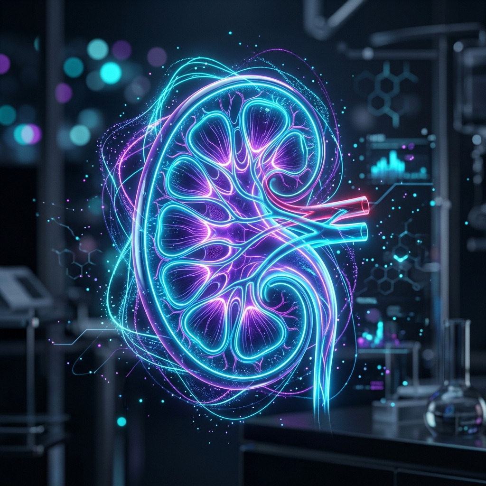
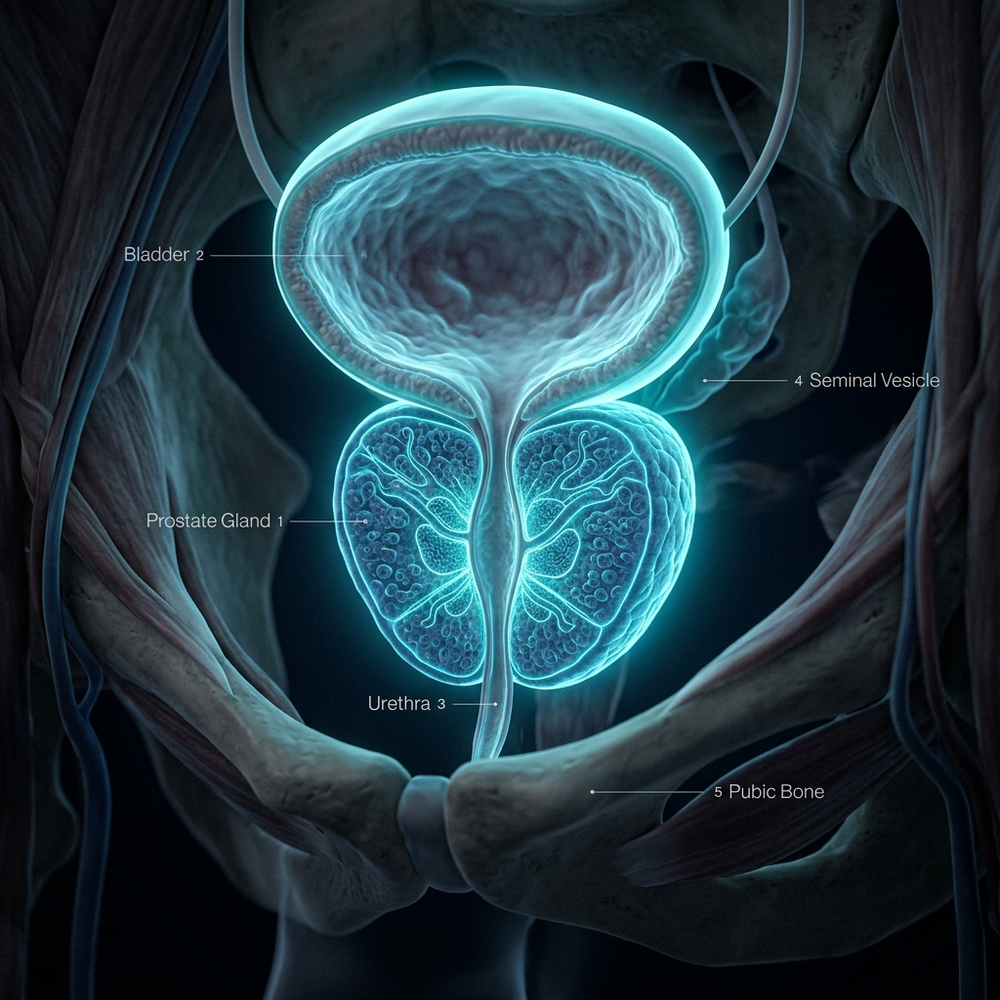
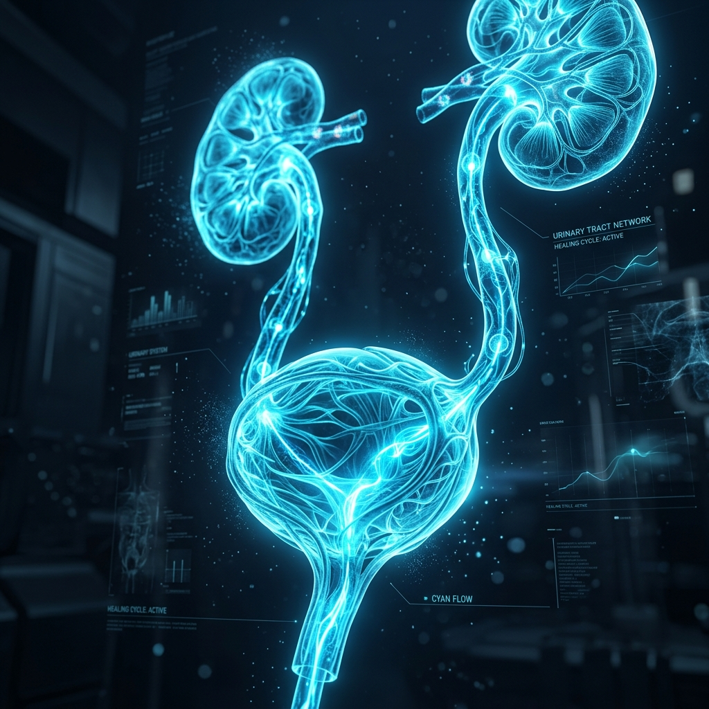

Dr. Jiyar Jalaladeen
Fellow of the Iraqi Board for Medical Specializations
Specialist in Kidney Diseases and Urinary Tract Surgeries.
0
Years Experience
0
+Patients Treated
0
+Successful Surgeries
About Dr. Jiyar
Dr. Jiyar Jalaladeen Sadiq is a highly distinguished Urologist with extensive expertise in diagnosing and treating complex urinary tract and male reproductive system disorders. As a teacher in the College of Medicine with specialized training represented by his FIBMS, Dr. Jiyar combines the latest medical research with compassionate patient care.
He is dedicated to utilizing minimally invasive surgical techniques, ensuring faster recovery times and better outcomes for his patients at Vin Private Hospital.
Comprehensive Services
State-of-the-art diagnostic and treatment options for a wide range of urological conditions.

Renal Surgery
Advanced surgical interventions for kidney stones, tumors, and congenital anomalies using minimally invasive and laparoscopic techniques for optimal recovery.

Prostate Surgery
Comprehensive treatment for Benign Prostatic Hyperplasia (BPH) and prostate cancer, including TURP, laser surgery, and advanced screening.
Infertility Treatment
Expert diagnosis and management of male infertility, varicocele repair, sperm retrieval techniques, and hormonal balancing to assist family planning.
Male & Female Sexual Problems
Discreet, professional, and effective treatments for erectile dysfunction, premature ejaculation, low libido, and female sexual health disorders.

Urinary Tract Infections (UTI)
Accurate diagnosis and targeted antibiotic therapies for acute and chronic infections of the bladder, kidneys, and urethra.
Endourology & Stones
Laser lithotripsy and ureteroscopy for the non-surgical or minimally invasive removal of kidney and bladder stones.
Get In Touch
Ready to take control of your health? Reach out via our interactive channels below to book your consultation.
Clinic Location
Vin Private Hospital & Complex, Duhok
Working Hours
Saturday - Thursday: 4:00 PM - 8:00 PM